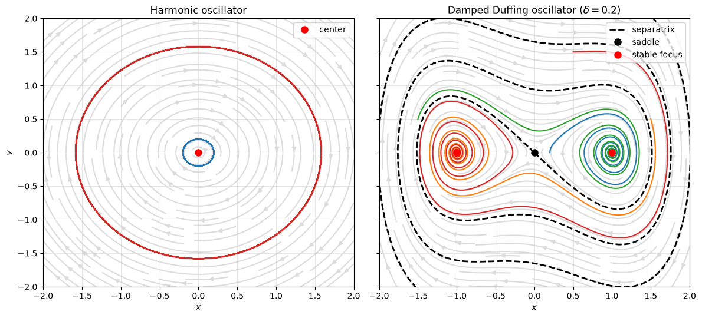
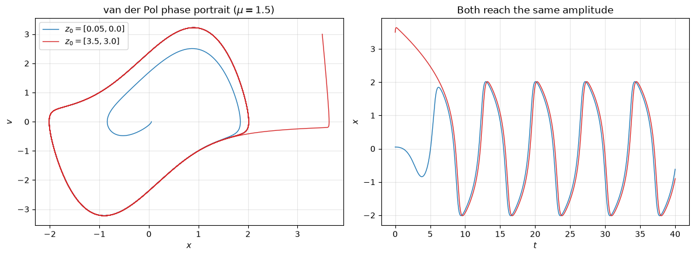
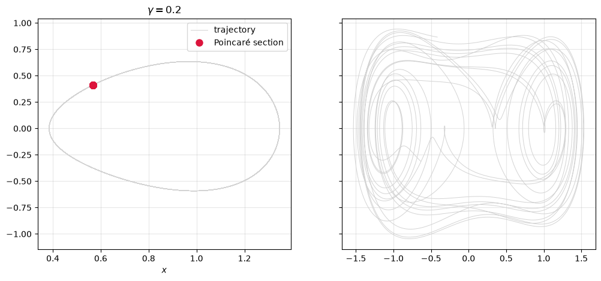

Non-linear dynamics and chaos#

Learning goals. After this lecture you should be able to
Read a phase portrait: find fixed points, classify their stability, recognize limit cycles and separatrices.
Use Poincaré sections and return/cobweb maps to reduce a continuous flow to a discrete map.
Analyze the logistic map: fixed points, cycles, the period-doubling route to chaos and the Feigenbaum constants.
Quantify chaos with Lyapunov exponents and characterize strange attractors with fractal dimensions.
Apply all of the above to physical systems: the driven Duffing oscillator, the driven pendulum, and the Lorenz model.
Motivation: is the solar system stable?#
After Newton, the universe was seen as a giant clock: know the positions and velocities of the planets today and you can, in principle, predict them forever. But is the solar system stable, or could a planet one day be ejected? In 1887 King Oscar II of Sweden offered a prize for a solution of this \(n\)-body problem.

Fig. 3 Henri Poincaré (1854-1912)#
Henri Poincaré attacked the simplest version, the three-body problem, and won the prize. Before publication an error was found in his paper. Fixing it, Poincaré discovered that the trajectories form an incredibly tangled web: a deterministic system can be unpredictable, because tiny differences in the initial conditions grow without bound. This is deterministic chaos.
Poincaré changed the question from “where exactly will the Earth be in a billion years?” to “what is the geometry of all possible orbits?”. That shift founded the field of dynamical systems. Decades later, computers (Lorenz, 1963) made chaos visible. That is precisely what we will do here.
Further reading: Tackling the Puzzle of Our Solar System’s Stability (Physics 16, 57, 2023).
Linear vs nonlinear dynamics#
Introductory courses focus on linear systems because they are solvable and describe small oscillations well. Most real systems are nonlinear, and they can behave in ways that linear intuition never predicts.
Linear |
Nonlinear |
|---|---|
Superposition holds: \(F(a x_1 + b x_2) = aF(x_1) + bF(x_2)\) |
No superposition: terms like \(x^2,\ xy,\ \sin x\) |
Response proportional to the forcing |
Response not proportional (e.g. amplitude-dependent frequency) |
Frequencies do not mix |
Frequencies mix (harmonics, sub-harmonics) |
A single equilibrium (generically) |
Multiple equilibria, bifurcations, limit cycles |
No chaos |
Chaos is possible (needs \(\geq 3\) dimensions for flows, \(\geq 1\) for maps) |
Harmonic oscillator: \(\ddot x + \omega_0^2 x = 0\) |
Duffing oscillator: \(\ddot x + \delta \dot x + \alpha x + \beta x^3 = 0\) |
Why at least 3 dimensions for a flow?
In a 2D autonomous system trajectories cannot cross, so (Poincaré-Bendixson theorem) bounded orbits can only approach fixed points or closed orbits. A third dimension, which can simply be the phase of an external periodic drive \(\phi = \Omega t\), gives trajectories room to stretch and fold without crossing.
%matplotlib inline
import numpy as np
import matplotlib.pyplot as plt
from scipy.integrate import solve_ivp
from scipy.stats import linregress
plt.rcParams.update({"figure.dpi": 100, "axes.grid": True, "grid.alpha": 0.3})
Phase space and fixed points#
Any ODE system can be written as a first-order system \(\dot{\mathbf{z}} = \mathbf{F}(\mathbf{z})\). For a 1D mechanical system the state is \(\mathbf{z} = (x, v)\), and the phase space is the \((x, v)\) plane. Every point has exactly one trajectory through it, so the vector field \(\mathbf{F}\) alone tells us a lot about the dynamics, without solving the equations.
Fixed points satisfy \(\mathbf{F}(\mathbf{z}^*) = 0\). To study their stability, write \(\mathbf{z} = \mathbf{z}^* + \boldsymbol{\eta}\) and linearize:
The solutions are \(\boldsymbol{\eta}(t) = \sum_k c_k \mathbf{e}_k e^{\lambda_k t}\), where \(\lambda_k, \mathbf{e}_k\) are the eigenvalues and eigenvectors of the Jacobian \(J\). Therefore:
Eigenvalues of \(J\) |
Fixed point |
|---|---|
\(\mathrm{Re}\,\lambda_k < 0\) for all \(k\) |
stable (node if real, spiral/focus if complex) |
some \(\mathrm{Re}\,\lambda_k > 0\) |
unstable |
real, opposite signs |
saddle (unstable): attracts along \(\mathbf{e}_-\), repels along \(\mathbf{e}_+\) |
purely imaginary |
center (linearization is inconclusive for nonlinear systems) |

Fig. 4 From: https://en.wikipedia.org/wiki/Stability_theory#
Example: harmonic vs double-well Duffing oscillator#
Compare \(\ddot x = -x\) with the damped double-well Duffing oscillator \(\ddot x = x - x^3 - \delta \dot x\), i.e. a particle in the potential \(V(x) = -x^2/2 + x^4/4\).
For Duffing, \(\mathbf{F}(x, v) = (v,\; x - x^3 - \delta v)\) and
The fixed points are \((0,0)\) and \((\pm 1, 0)\). We compute their eigenvalues numerically. The stable manifold of the saddle (obtained by integrating backwards in time from a point very close to the saddle along \(\mathbf{e}_-\)) is the separatrix: it splits the plane into the basins of attraction of the two wells.
delta = 0.2
def duffing(t, z):
x, v = z
return [v, x - x**3 - delta * v]
def jacobian_duffing(x, v):
return np.array([[0, 1], [1 - 3 * x**2, -delta]])
fixed_points = [(0.0, 0.0), (1.0, 0.0), (-1.0, 0.0)]
for fp in fixed_points:
lam, vec = np.linalg.eig(jacobian_duffing(*fp))
print(f"fixed point {fp}: eigenvalues = {np.round(lam, 4)}")
# Stable eigenvector of the saddle (negative eigenvalue)
lam, vec = np.linalg.eig(jacobian_duffing(0, 0))
e_stable = vec[:, np.argmin(lam.real)]
# --- Plot ---
X, V = np.meshgrid(np.linspace(-2, 2, 25), np.linspace(-2, 2, 25))
initial_conditions = [[0.2, 0.0], [1.5, 0.5], [-1.5, 0.5], [0.5, 1.5]]
t_eval = np.linspace(0, 40, 3000)
fig, (ax1, ax2) = plt.subplots(1, 2, figsize=(12, 5.5), sharey=True)
ax1.streamplot(X, V, V, -X, density=1.2, color="gainsboro")
for z0 in initial_conditions:
sol = solve_ivp(lambda t, z: [z[1], -z[0]], (0, 40), z0, t_eval=t_eval, rtol=1e-8)
ax1.plot(*sol.y)
ax1.plot(0, 0, "ro", ms=8, label="center")
ax1.set(title="Harmonic oscillator", xlabel="$x$", ylabel="$v$", xlim=(-2, 2), ylim=(-2, 2))
ax1.legend(loc="upper right")
ax2.streamplot(X, V, V, X - X**3 - delta * V, density=1.2, color="gainsboro")
for z0 in initial_conditions:
sol = solve_ivp(duffing, (0, 40), z0, t_eval=t_eval, rtol=1e-8)
ax2.plot(*sol.y)
for sign in [+1, -1]: # two branches of the separatrix
sep = solve_ivp(duffing, (0, -15), sign * 1e-3 * e_stable, rtol=1e-9, max_step=0.05)
ax2.plot(*sep.y, "k--", lw=2, label="separatrix" if sign > 0 else None)
ax2.plot(0, 0, "ko", ms=8, label="saddle")
ax2.plot([1, -1], [0, 0], "ro", ms=8, label="stable focus")
ax2.set(title=rf"Damped Duffing oscillator ($\delta={delta}$)", xlabel="$x$", xlim=(-2, 2))
ax2.legend(loc="upper right")
plt.tight_layout()
plt.show()
fixed point (0.0, 0.0): eigenvalues = [ 0.905 -1.105]
fixed point (1.0, 0.0): eigenvalues = [-0.1+1.4107j -0.1-1.4107j]
fixed point (-1.0, 0.0): eigenvalues = [-0.1+1.4107j -0.1-1.4107j]

Exercise 3 (Phase portrait of the nonlinear pendulum)
Plot the phase portrait of the undamped pendulum \(\ddot\theta + \omega_0^2 \sin\theta = 0\) (take \(\omega_0 = 1\)) for \(\theta \in [-2\pi, 2\pi]\) and several initial conditions.
Find the fixed points and classify them with the Jacobian.
Plot the level curves of the energy \(E = \frac{1}{2}\dot\theta^2 - \omega_0^2\cos\theta\) (use
plt.contour). Why are the trajectories exactly these curves?Identify the separatrix (\(E = \omega_0^2\)). Which motions are librations and which are rotations?
What happens at low amplitudes? Compare with the harmonic oscillator.
# Pendulum phase portrait
# YOUR CODE HERE
pass
Limit cycles: the van der Pol oscillator#
Nonlinear systems can have isolated closed orbits called limit cycles, which do not exist in linear systems: a linear center has a continuous family of orbits whose amplitude is fixed by the initial conditions. The van der Pol oscillator (an early model of vacuum-tube circuits and of heartbeats)
has negative damping for \(|x| < 1\) (energy is pumped in) and positive damping for \(|x| > 1\). Every trajectory, starting inside or outside, converges to the same periodic orbit: its amplitude is a property of the system, not of the initial condition.
mu = 1.5
vdp = lambda t, z: [z[1], mu * (1 - z[0]**2) * z[1] - z[0]]
fig, (ax1, ax2) = plt.subplots(1, 2, figsize=(12, 4.5))
for z0, c in [([0.05, 0.0], "C0"), ([3.5, 3.0], "C3")]:
sol = solve_ivp(vdp, (0, 40), z0, t_eval=np.linspace(0, 40, 4000), rtol=1e-8)
ax1.plot(*sol.y, color=c, lw=1, label=f"$z_0 = {z0}$")
ax2.plot(sol.t, sol.y[0], color=c, lw=1)
ax1.set(xlabel="$x$", ylabel="$v$", title=rf"van der Pol phase portrait ($\mu={mu}$)")
ax1.legend()
ax2.set(xlabel="$t$", ylabel="$x$", title="Both reach the same amplitude")
plt.tight_layout()
plt.show()

Exercise 4 (Limit cycle period and shape)
Measure the period of the van der Pol limit cycle as a function of \(\mu \in [0.1, 10]\) (e.g. from the times between successive upward zero crossings of \(x\) after the transient). Compare with \(T \approx 2\pi\) for \(\mu \ll 1\) and \(T \approx (3 - 2\ln 2)\mu\) for \(\mu \gg 1\) (relaxation oscillations).
Plot \(x(t)\) for \(\mu = 0.1\) and \(\mu = 8\). Why does the second look like a square wave?
Poincaré sections#
Adding a periodic drive to a 2D oscillator, \(\ddot x = F(x, \dot x) + \gamma \cos \Omega t\), makes the phase space 3D: \((x, v, \phi)\) with \(\phi = \Omega t \bmod 2\pi\). Plotting the full trajectory projected onto \((x, v)\) produces an unreadable tangle. Poincaré’s idea: record the state only when the trajectory crosses a surface. For a periodic drive, the natural choice is a stroboscopic sampling at \(t_n = n T\), \(T = 2\pi/\Omega\). The continuous flow becomes a 2D map \(\mathbf{z}_{n+1} = P(\mathbf{z}_n)\) (see https://en.wikipedia.org/wiki/Poincaré_map).
Long-time motion |
Poincaré section |
|---|---|
periodic, same period as the drive |
1 point |
periodic with period \(kT\) |
\(k\) points |
quasi-periodic (incommensurate frequencies) |
a closed curve |
chaotic |
a fractal set of points (strange attractor) |
Example: the driven Duffing oscillator#
We use \(\ddot x = x - x^3 - \delta \dot x + \gamma\cos(\Omega t)\) with \(\delta = 0.3\), \(\Omega = 1.2\), and compare a weak drive (\(\gamma = 0.2\)) with a strong drive (\(\gamma = 0.5\)).
def duffing_driven(t, z, delta, gamma, Omega):
x, v = z
return [v, x - x**3 - delta * v + gamma * np.cos(Omega * t)]
def poincare_section(rhs, z0, T, n_transient, n_points, args=(), **kw):
"""Integrate and return the state sampled at t = n T after a transient."""
n_total = n_transient + n_points
sol = solve_ivp(rhs, (0, n_total * T), z0, t_eval=np.arange(n_total) * T,
args=args, rtol=1e-9, atol=1e-9, **kw)
return sol.y[:, n_transient:]
delta, Omega = 0.3, 1.2
T = 2 * np.pi / Omega
fig, axes = plt.subplots(1, 2, figsize=(12, 5), sharey=True)
for ax, gamma, npts in zip(axes, [0.2, 0.5], [50, 4000]):
args = (delta, gamma, Omega)
# Continuous trajectory (last 30 periods, after a transient)
sol =solve_ivp(duffing_driven, (0, 130 * T), [0.5, 0.0], args=args,
t_eval=np.linspace(100 * T, 130 * T, 5000), rtol=1e-9)
ax.plot(*sol.y, color="lightgray", lw=0.7, label="trajectory")
P = poincare_section(duffing_driven, [0.5, 0.0], T, 100, npts, args=args)
ax.plot(*P, "o", color="crimson", ms=1.5 if npts > 100 else 8, label="Poincaré section")
ax.set(title=rf"$\gamma = {gamma}$", xlabel="$x$")
ax.legend(loc="upper right")
axes[0].set_ylabel("$v$")
plt.tight_layout()
plt.savefig("fig/duffing_poincare.png")
plt.show()
---------------------------------------------------------------------------
KeyboardInterrupt Traceback (most recent call last)
Cell In[6], line 22
18 # Continuous trajectory (last 30 periods, after a transient)
19 sol =solve_ivp(duffing_driven, (0, 130 * T), [0.5, 0.0], args=args,
20 t_eval=np.linspace(100 * T, 130 * T, 5000), rtol=1e-9)
21 ax.plot(*sol.y, color="lightgray", lw=0.7, label="trajectory")
---> 22 P = poincare_section(duffing_driven, [0.5, 0.0], T, 100, npts, args=args)
23 ax.plot(*P, "o", color="crimson", ms=1.5 if npts > 100 else 8, label="Poincaré section")
24 ax.set(title=rf"$\gamma = {gamma}$", xlabel="$x$")
25 ax.legend(loc="upper right")
Cell In[6], line 8, in poincare_section(rhs, z0, T, n_transient, n_points, args, **kw)
5 def poincare_section(rhs, z0, T, n_transient, n_points, args=(), **kw):
6 """Integrate and return the state sampled at t = n T after a transient."""
7 n_total = n_transient + n_points
----> 8 sol = solve_ivp(rhs, (0, n_total * T), z0, t_eval=np.arange(n_total) * T,
9 args=args, rtol=1e-9, atol=1e-9, **kw)
10 return sol.y[:, n_transient:]
File /opt/hostedtoolcache/Python/3.11.17/x64/lib/python3.11/site-packages/scipy/integrate/_ivp/ivp.py:657, in solve_ivp(fun, t_span, y0, method, t_eval, dense_output, events, vectorized, args, **options)
655 status = None
656 while status is None:
--> 657 message = solver.step()
659 if solver.status == 'finished':
660 status = 0
File /opt/hostedtoolcache/Python/3.11.17/x64/lib/python3.11/site-packages/scipy/integrate/_ivp/base.py:201, in OdeSolver.step(self)
199 else:
200 t = self.t
--> 201 success, message = self._step_impl()
203 if not success:
204 self.status = 'failed'
File /opt/hostedtoolcache/Python/3.11.17/x64/lib/python3.11/site-packages/scipy/integrate/_ivp/rk.py:144, in RungeKutta._step_impl(self)
141 h = t_new - t
142 h_abs = np.abs(h)
--> 144 y_new, f_new = rk_step(self.fun, t, y, self.f, h, self.A,
145 self.B, self.C, self.K)
146 scale = atol + np.maximum(np.abs(y), np.abs(y_new)) * rtol
147 error_norm = self._estimate_error_norm(self.K, h, scale)
File /opt/hostedtoolcache/Python/3.11.17/x64/lib/python3.11/site-packages/scipy/integrate/_ivp/rk.py:64, in rk_step(fun, t, y, f, h, A, B, C, K)
62 for s, (a, c) in enumerate(zip(A[1:], C[1:]), start=1):
63 dy = np.dot(K[:s].T, a[:s]) * h
---> 64 K[s] = fun(t + c * h, y + dy)
66 y_new = y + h * np.dot(K[:-1].T, B)
67 f_new = fun(t + h, y_new)
File /opt/hostedtoolcache/Python/3.11.17/x64/lib/python3.11/site-packages/scipy/integrate/_ivp/base.py:156, in OdeSolver.__init__.<locals>.fun(t, y)
153 f[:, i] = self._fun(t, yi)
154 return f
--> 156 def fun(t, y):
157 self.nfev += 1
158 return self.fun_single(t, y)
KeyboardInterrupt:

For \(\gamma = 0.2\) the oscillator settles in one well with the same period as the drive (a single point). For \(\gamma = 0.5\) it jumps erratically between the wells, and the Poincaré section reveals a folded, layered structure: a strange attractor.
Exercise 5 (Exploring the driven Duffing oscillator)
Plot the Poincaré section for \(\gamma \in \{0.20, 0.28, 0.29, 0.37, 0.5\}\). Count the points: can you find period-2 or period-4 motions?
Change the sampling phase, \(t_n = nT + \phi_0/\Omega\), for several \(\phi_0\). How does the strange attractor change? Why is the number of points of a periodic orbit independent of \(\phi_0\)?
Undamped, unforced case: sample the pendulum (\(\ddot\theta = -\sin\theta\)) every \(\Delta t = \sqrt{2}\pi\). What do you get, and why does the sampling interval not matter for the shape?
Discrete maps: the logistic map#
(Based on Kaplan & Glass, Understanding Nonlinear Dynamics; and Strogatz, Nonlinear Dynamics and Chaos)
The Poincaré section turned a flow into a map \(\mathbf{z}_{n+1} = P(\mathbf{z}_n)\). Maps are much cheaper to iterate and already contain all the phenomenology of chaos. The simplest nonlinear 1D map is the logistic map, a model for a population with limited resources:
The factor \(R x_n\) describes growth when the population is small; the factor \((1 - x_n)\) represents competition for resources.
def logistic(x, R):
return R * x * (1 - x)
def iterate_map(f, x0, n, *args):
"""Return the orbit [x0, f(x0), f(f(x0)), ...] of length n."""
xs = np.empty(n)
xs[0] = x0
for i in range(1, n):
xs[i] = f(xs[i - 1], *args)
return xs
fig, axes = plt.subplots(1, 4, figsize=(15, 3.2), sharey=True)
for ax, R, label in zip(axes, [0.8, 2.8, 3.2, 3.9], ["extinction", "fixed point", "period 2", "chaos"]):
ax.plot(iterate_map(logistic, 0.2, 60, R), "o-", ms=3, lw=0.8)
ax.set(title=f"$R = {R}$: {label}", xlabel="$n$")
axes[0].set_ylabel("$x_n$")
plt.tight_layout()
plt.show()
Cobweb plots#
A time series hides the geometry of the map. A cobweb plot shows the iteration graphically: draw \(y = f(x)\) and the diagonal \(y = x\); from \(x_n\) go vertically to the curve (that gives \(x_{n+1}\)), then horizontally to the diagonal (that turns \(x_{n+1}\) into the new input), and repeat. Fixed points are the intersections of the curve with the diagonal, and you can see that they repel when the curve is steeper than the diagonal, \(|f'(x^*)| > 1\).
def cobweb(ax, f, x0, n, *args):
x = np.linspace(0, 1, 400)
ax.plot(x, f(x, *args), "r", lw=1.5)
ax.plot(x, x, "k--", lw=1)
xs = iterate_map(f, x0, n, *args)
px = np.repeat(xs, 2)[1:-1] # x0, x1, x1, x2, x2, ...
py = np.repeat(xs, 2)[2:] # x1, x1, x2, x2, ...
ax.plot(np.r_[xs[0], px], np.r_[0, py], lw=0.8)
ax.plot(xs[0], 0, "go")
fig, axes = plt.subplots(1, 4, figsize=(15, 3.8), sharey=True)
for ax, R in zip(axes, [2.8, 3.2, 3.5, 3.9]):
cobweb(ax, logistic, 0.1, 80, R)
ax.set(title=f"$R = {R}$", xlabel="$x_n$", aspect="equal")
axes[0].set_ylabel("$x_{n+1}$")
plt.tight_layout()
plt.show()
Interactive version (move the slider; it also works in the HTML book):
Fixed points and their stability#
A fixed point satisfies \(x^* = f(x^*)\). Write \(x_n = x^* + \eta_n\) and Taylor expand:
Hence \(x^*\) is stable if \(|f'(x^*)| < 1\) and unstable if \(|f'(x^*)| > 1\). (Compare with flows, where the condition is \(\mathrm{Re}\,\lambda < 0\): the map multiplier \(f'\) plays the role of \(e^{\lambda \Delta t}\).) If \(f'(x^*) < 0\) the perturbation alternates in sign; this is how period doubling starts. The iterations needed to approach a stable fixed point are called the transient, and the set of initial conditions that converge to it is its basin of attraction.
For the logistic map, \(f'(x) = R(1 - 2x)\):
Fixed point |
\(f'(x^*)\) |
Stable for |
|---|---|---|
\(x^* = 0\) |
\(R\) |
\(0 \le R < 1\) |
\(x^* = 1 - 1/R\) |
\(2 - R\) |
\(1 < R < 3\) |
At \(R = 3\), \(f'(x^*) = -1\): the fixed point loses stability and a period-2 cycle is born.
YOUR ANSWER HERE
R = 3.2
# YOUR CODE HERE
pass
Exercise 6 (Fixed points of other maps)
Find (numerically, e.g. with
scipy.optimize.brentq) the fixed point of \(x_{n+1} = R\cos x_n\) for \(R = 1\) and \(R = 3\), and decide its stability. Confirm with a cobweb plot.The sine map \(x_{n+1} = r \sin(\pi x_n)\), \(x \in [0, 1]\), \(r \in [0, 1]\), has a single quadratic maximum, like the logistic map. For which \(r\) does the nontrivial fixed point lose stability?
Chaos#
A dynamical system is chaotic when its long-term behavior is
aperiodic (it never settles onto a fixed point or a cycle),
bounded,
deterministic (no noise: the irregularity is intrinsic), and
sensitive to initial conditions: nearby orbits separate exponentially fast.
Let us check point 4 with the logistic map at \(R = 4\) and two initial conditions that differ by \(10^{-10}\).
R, x0, eps = 4.0, 0.523423, 1e-10
xa = iterate_map(logistic, x0, 60, R)
xb = iterate_map(logistic, x0 + eps, 60, R)
n = np.arange(60)
fig, (ax1, ax2) = plt.subplots(1, 2, figsize=(13, 4))
ax1.plot(n, xa, "o-", ms=3, label=f"$x_0 = {x0}$")
ax1.plot(n, xb, "s--", ms=3, label=r"$x_0 + 10^{-10}$")
ax1.set(xlabel="$n$", ylabel="$x_n$", title="Two almost identical initial conditions")
ax1.legend()
ax2.semilogy(n, np.abs(xa - xb), "o-", ms=3, label=r"$|\Delta x_n|$")
ax2.semilogy(n, eps * 2.0**n, "k--", label=r"$10^{-10}\, e^{n \ln 2}$")
ax2.set(xlabel="$n$", title="Exponential separation, then saturation", ylim=(1e-12, 2))
ax2.legend()
plt.tight_layout()
plt.show()
The separation grows as \(|\Delta x_n| \approx |\Delta x_0|\, e^{\lambda n}\) with \(\lambda = \ln 2\) until it reaches the size of the attractor. A practical consequence: if we know \(x_0\) with precision \(\epsilon\), we can predict only up to \(n \sim \lambda^{-1}\ln(1/\epsilon)\). Improving the precision by a factor of \(10^{6}\) only gives \(\approx 20\) more steps. Double-precision round-off (\(\epsilon \sim 10^{-16}\)) means that, after \(\sim 50\) iterations, every computed chaotic orbit is a different orbit from the true one (though still a “typical” orbit of the attractor: this is the shadowing property).
Lyapunov exponents#
The Lyapunov exponent \(\lambda\) is the average exponential rate of separation of infinitesimally close orbits: \(|\delta_n| \approx |\delta_0| e^{\lambda n}\). A positive largest exponent is the standard signature of chaos.

Fig. 5 From: https://en.wikipedia.org/wiki/Lyapunov_exponent#
1D maps. By the chain rule, \(\delta_n = (f^{(n)})'(x_0)\,\delta_0 = \prod_{i=0}^{n-1} f'(x_i)\; \delta_0\), so
It is a time average along the orbit: no need to follow two trajectories.
Higher dimensions. For \(\mathbf{x}_{n+1} = \mathbf{F}(\mathbf{x}_n)\), perturbations evolve with the Jacobian, \(\delta\mathbf{x}_{n+1} = J(\mathbf{x}_n)\,\delta\mathbf{x}_n\). There are as many exponents \(\lambda_1 \ge \lambda_2 \ge \dots\) as dimensions, measuring the stretching rates along different directions. They are computed by evolving a set of perturbation vectors and periodically re-orthonormalizing them (QR decomposition; Benettin et al., 1980). For flows, the same ideas apply with \(t\) instead of \(n\), and one exponent is always zero (perturbations along the trajectory neither grow nor shrink).
\(\lambda\) |
Meaning |
|---|---|
\(\lambda < 0\) |
stable fixed point or cycle (perturbations decay) |
\(\lambda = 0\) |
marginal: bifurcation point, or quasi-periodic motion |
\(\lambda > 0\) |
chaos |
Exercise 7 (Lyapunov exponent and bifurcation diagram of the logistic map)
Write
lyapunov_logistic(R, n, transient, x0)that returns \(\lambda(R)\) using \(f'(x) = R(1 - 2x)\).Write
bifurcation_diagram(R_values, n, transient, x0): for each \(R\), iterate the map, discard the transient and return the nextnvalues of \(x\). Hint: iterate all values of \(R\) at once with numpy arrays.Plot both, one above the other, with a shared \(R\) axis. Relate the zeros of \(\lambda\) to the bifurcations and the regions with \(\lambda > 0\) to the chaotic bands. What happens in the periodic windows (e.g. near \(R \approx 3.83\))?
Check that \(\lambda(4) = \ln 2\).
def lyapunov_logistic(R, n=2000, transient=500, x0=0.3):
"""Lyapunov exponent of the logistic map. Works with R scalar or array."""
# YOUR CODE HERE
pass
def bifurcation_diagram(R_values, n=200, transient=1000, x0=0.3):
"""Return arrays (R, x) with the last n iterates for every R."""
# YOUR CODE HERE
pass
R_values = np.linspace(2.5, 4.0, 2000)
Rb, xb = bifurcation_diagram(R_values)
lam = lyapunov_logistic(R_values)
print(f"lambda(4) = {lyapunov_logistic(np.array([4.0]))[0]:.4f}, ln 2 = {np.log(2):.4f}")
fig, (ax1, ax2) = plt.subplots(2, 1, figsize=(10, 7), sharex=True, gridspec_kw={"height_ratios": [2, 1]})
ax1.plot(Rb, xb, ",k", alpha=0.3)
ax1.set(ylabel="$x$ (attractor)", title="Logistic map: bifurcation diagram and Lyapunov exponent")
ax2.plot(R_values, lam, lw=0.8)
ax2.axhline(0, color="k", ls="--", lw=0.8)
ax2.set(xlabel="$R$", ylabel=r"$\lambda$", ylim=(-2, 1))
plt.tight_layout()
plt.savefig("fig/bifurcation_lyapunov.png")
plt.show()
The period-doubling route to chaos and the Feigenbaum constants#
As \(R\) increases, the stable fixed point gives way to a 2-cycle at \(R_1 = 3\), then a 4-cycle at \(R_2 = 1 + \sqrt 6 \approx 3.4495\), an 8-cycle at \(R_3 \approx 3.5441\), and so on: a period-doubling cascade that accumulates at
beyond which chaos appears (interrupted by periodic windows). Feigenbaum (1978) discovered that the bifurcations accumulate geometrically,
and that the branches of the diagram shrink by a constant factor at each doubling,
where \(d_n\) is the signed distance between \(x = 1/2\) and its nearest neighbor on the \(2^n\) cycle (the sign shows that the branches flip at each step).
Universality. \(\delta\) and \(\alpha\) are the same for every smooth map with a single quadratic maximum, independently of its formula. They have also been measured in real experiments (fluid convection, nonlinear electronic circuits, lasers). The explanation comes from renormalization-group ideas (Feigenbaum; Collet, Eckmann and Lanford).
Computing \(\delta\) and \(\alpha\) numerically#
The bifurcation points \(R_n\) are hard to locate because convergence is very slow there. It is much easier to find the superstable parameters \(\bar R_n\), for which the \(2^n\) cycle contains the critical point \(x_c = 1/2\) (so \(f'(x_c) = 0\) and the multiplier is exactly 0). They converge at the same rate \(\delta\). We find them with Newton’s method on
where the derivative \(dg/dR\) is propagated along the orbit with the chain rule, \(\frac{dx_{k+1}}{dR} = x_k(1 - x_k) + R(1 - 2x_k)\frac{dx_k}{dR}\). Each new guess is extrapolated with the current estimate of \(\delta\).
def superstable_R(period, R_guess, tol=1e-14, max_iter=100):
"""Newton's method for R such that f^(period)(1/2; R) = 1/2."""
R = R_guess
for _ in range(max_iter):
x, dxdR = 0.5, 0.0
for _ in range(period):
dxdR = x * (1 - x) + R * (1 - 2 * x) * dxdR
x = logistic(x, R)
R_new = R - (x - 0.5) / dxdR
if abs(R_new - R) < tol:
return R_new
R = R_new
return R
def distance_to_neighbor(n, R):
"""d_n = f^(2^(n-1))(1/2) - 1/2 at the superstable parameter."""
x = 0.5
for _ in range(2 ** (n - 1)):
x = logistic(x, R)
return x - 0.5
Rbar = [2.0, superstable_R(2, 3.2)] # superstable period-1 and period-2
for n in range(2, 13):
guess = Rbar[-1] + (Rbar[-1] - Rbar[-2]) / 4.7
Rbar.append(superstable_R(2**n, guess))
print(f"{'n':>2} {'period':>6} {'R_n':>18} {'delta_n':>12} {'alpha_n':>12}")
for n in range(1, len(Rbar)):
delta_n = (Rbar[n - 1] - Rbar[n - 2]) / (Rbar[n] - Rbar[n - 1]) if n >= 2 else np.nan
alpha_n = distance_to_neighbor(n - 1, Rbar[n - 1]) / distance_to_neighbor(n, Rbar[n]) if n >= 2 else np.nan
print(f"{n:2d} {2**n:6d} {Rbar[n]:18.14f} {delta_n:12.8f} {alpha_n:12.8f}")
print("\nExact: delta = 4.66920160910..., alpha = -2.50290787509...")
Exercise 8 (Universality)
Repeat the bifurcation diagram for the sine map \(x_{n+1} = r\sin(\pi x_n)\). Does it look like the logistic one?
Adapt
superstable_Rto the sine map (you need \(\partial f / \partial r\) and \(\partial f / \partial x\); the critical point is still \(x_c = 1/2\)) and estimate \(\delta\). Do you get the same value?(Optional) Try a map with a quartic maximum, \(x_{n+1} = r\,[1 - (2x - 1)^4]\). Is \(\delta\) the same? Why not?
Chaos in a physical system: the driven damped pendulum#
A pendulum with damping \(q\) and a periodic torque (Giordano & Nakanishi, Computational Physics, ch. 3):
We fix \(g/l = 1\), \(q = 1/2\), \(\Omega_D = 2/3\), \(\theta_0 = 0.2\), \(\dot\theta_0 = 0\), and vary the driving amplitude \(F_D\). It has three dimensions \((\theta, \omega, \Omega_D t)\), so chaos is allowed.
Q, WD = 0.5, 2.0 / 3.0
TD = 2 * np.pi / WD # drive period
def pendulum(t, y, FD):
theta, omega = y
return [omega, -np.sin(theta) - Q * omega + FD * np.sin(WD * t)]
def wrap(theta):
"""Map an angle into [-pi, pi)."""
return (theta + np.pi) % (2 * np.pi) - np.pi
t = np.linspace(0, 60, 3000)
fig, ax = plt.subplots(figsize=(10, 4))
for FD in [0.0, 0.5, 1.2]:
sol = solve_ivp(pendulum, (0, t[-1]), [0.2, 0.0], t_eval=t, args=(FD,), rtol=1e-9, atol=1e-9)
ax.plot(t, sol.y[0], label=rf"$F_D = {FD}$")
ax.set(xlabel="$t$", ylabel=r"$\theta$ (unwrapped)", title="Driven damped pendulum")
ax.legend()
plt.show()
For \(F_D = 0\) the motion decays; for \(F_D = 0.5\) the pendulum settles into a periodic motion locked to the drive; for \(F_D = 1.2\) it erratically swings and goes over the top.
Sensitivity to initial conditions#
We integrate two trajectories that start \(\Delta\theta_0 = 10^{-6}\) apart and plot \(|\Delta\theta(t)|\) on a log scale. A straight line means exponential behavior, and its slope estimates the largest Lyapunov exponent.
t = np.linspace(0, 150, 6000)
fig, ax = plt.subplots(figsize=(10, 4))
for FD, tfit in [(0.5, (0, 60)), (1.2, (0, 80))]:
s1 = solve_ivp(pendulum, (0, t[-1]), [0.2, 0.0], t_eval=t, args=(FD,), rtol=1e-11, atol=1e-11)
s2 = solve_ivp(pendulum, (0, t[-1]), [0.2 + 1e-6, 0.0], t_eval=t, args=(FD,), rtol=1e-11, atol=1e-11)
dtheta = np.abs(s1.y[0] - s2.y[0])
mask = (t > tfit[0]) & (t < tfit[1])
lam = linregress(t[mask], np.log(dtheta[mask])).slope
ax.semilogy(t, dtheta, lw=0.8, label=rf"$F_D = {FD}$: $\lambda \approx {lam:.3f}$")
ax.set(xlabel="$t$", ylabel=r"$|\Delta\theta|$")
ax.legend()
plt.show()
For \(F_D = 0.5\) the separation decays (\(\lambda < 0\): regular motion); for \(F_D = 1.2\) it grows exponentially (\(\lambda > 0\): chaos) until it saturates at the size of the attractor (\(\sim \pi\)). The oscillations around the trend are expected: \(\lambda\) is only an average rate.
Phase portrait and Poincaré section#
fig, axes = plt.subplots(1, 3, figsize=(16, 5))
for ax, FD in zip(axes[:2], [0.5, 1.2]):
sol = solve_ivp(pendulum, (0, 60 * TD), [0.2, 0.0], args=(FD,), rtol=1e-9,
t_eval=np.linspace(20 * TD, 60 * TD, 20000))
ax.plot(wrap(sol.y[0]), sol.y[1], ",", alpha=0.5)
ax.set(title=rf"Phase portrait, $F_D = {FD}$", xlabel=r"$\theta$", ylabel=r"$\omega$", xlim=(-np.pi, np.pi))
P = poincare_section(pendulum, [0.2, 0.0], TD, 100, 5000, args=(1.2,))
axes[2].plot(wrap(P[0]), P[1], ".", ms=1.5, color="darkblue")
axes[2].set(title=r"Poincaré section, $F_D = 1.2$ (sampled at $t = nT_D$)",
xlabel=r"$\theta$", ylabel=r"$\omega$", xlim=(-np.pi, np.pi))
plt.tight_layout()
plt.show()
The phase portrait for \(F_D = 1.2\) fills a region densely and tells us little. The Poincaré section, with the same data sampled once per drive period, reveals the fine, folded structure of the strange attractor.
Exercise 9 (Bifurcation diagram of the driven pendulum)
Reproduce the classic figure (Giordano & Nakanishi, Fig. 3.11): for each \(F_D \in [1.35, 1.50]\), integrate the pendulum, discard a transient of \(\sim 300\) drive periods and plot \(\omega\) at the times \(t = nT_D\) for the next \(\sim 100\) periods.
Identify the period-doubling cascade. Estimate the first three bifurcation points and the ratio \(\delta\). Is it close to Feigenbaum’s value?
Calling
solve_ivphundreds of times is slow. Write instead a fixed-step RK4 integrator that advances all values of \(F_D\) simultaneously as one numpy array. Choose the step as an exact fraction of \(T_D\) (e.g. \(T_D/100\)) so that the sampling times fall exactly on the grid.
def rk4_pendulum_bifurcation(FD_values, n_transient=300, n_points=100, steps_per_period=100):
"""Return (FD, omega) sampled once per drive period, for all FD at once."""
# YOUR CODE HERE
pass
FD_values = np.linspace(1.35, 1.50, 400)
FDb, wb = rk4_pendulum_bifurcation(FD_values)
plt.figure(figsize=(10, 5))
plt.plot(FDb, wb, ",k", alpha=0.5)
plt.xlabel("$F_D$")
plt.ylabel(r"$\omega$ at $t = nT_D$")
plt.title("Bifurcation diagram of the driven pendulum")
plt.savefig("fig/pendulum_bifurcation.png")
plt.show()
The Lorenz system#
In 1963 the meteorologist Edward Lorenz reduced a model of atmospheric convection to three ODEs:
with \(\sigma = 10\), \(\beta = 8/3\), \(\rho = 28\). Restarting a simulation from rounded printed values, he found a completely different “forecast”: the origin of the term butterfly effect. The Lorenz system is autonomous (no external drive) and 3D, and it has a strange attractor of dimension \(\approx 2.06\).
sigma, beta, rho = 10.0, 8.0 / 3.0, 28.0
def lorenz(t, s):
x, y, z = s
return [sigma * (y - x), x * (rho - z) - y, x * y - beta * z]
# Discard a transient so that both trajectories start ON the attractor
r0 = solve_ivp(lorenz, (0, 30), [1.0, 1.0, 1.0], rtol=1e-11, atol=1e-11).y[:, -1]
t = np.linspace(0, 40, 16000)
sa = solve_ivp(lorenz, (0, t[-1]), r0, t_eval=t, rtol=1e-12, atol=1e-12)
sb = solve_ivp(lorenz, (0, t[-1]), r0 + [1e-8, 0, 0], t_eval=t, rtol=1e-12, atol=1e-12)
fig = plt.figure(figsize=(15, 4.5))
ax = fig.add_subplot(1, 3, 1, projection="3d")
ax.plot(*sa.y, lw=0.4)
ax.set(xlabel="$x$", ylabel="$y$", zlabel="$z$", title="Lorenz attractor")
ax = fig.add_subplot(1, 3, 2)
ax.plot(t, sa.y[0], lw=0.8, label=r"$\mathbf{r}_0$")
ax.plot(t, sb.y[0], lw=0.8, label=r"$\mathbf{r}_0 + 10^{-8}\hat{x}$")
ax.set(xlabel="$t$", ylabel="$x$", title="Butterfly effect", xlim=(0, 30))
ax.legend(loc="lower left")
ax = fig.add_subplot(1, 3, 3)
dist = np.linalg.norm(sa.y - sb.y, axis=0)
mask = t < 20 # exponential regime, before saturation
fit = linregress(t[mask], np.log(dist[mask]))
lam = fit.slope
ax.semilogy(t, dist, lw=0.8)
ax.semilogy(t[mask], np.exp(fit.intercept + lam * t[mask]), "k--",
label=rf"fit: $\lambda \approx {lam:.2f}$ (exact 0.906)")
ax.set(xlabel="$t$", ylabel=r"$|\mathbf{r}_a - \mathbf{r}_b|$", title="Separation")
ax.legend()
plt.tight_layout()
plt.show()
Exercise 10 (The Lorenz map: from a flow back to a 1D map)
Lorenz noticed that the trajectory spirals around one lobe and then jumps to the other one when the oscillations become too large. He extracted the successive local maxima \(z_n\) of \(z(t)\) and plotted \(z_{n+1}\) vs \(z_n\).
Integrate the Lorenz system for a long time (\(t \sim 500\)), discard the transient and find the local maxima of \(z(t)\) (e.g.
scipy.signal.find_peaks).Plot \(z_{n+1}\) vs \(z_n\). Are the points scattered, or do they lie on a curve? Compare with the cobweb plots of the logistic map.
Estimate the slope of the curve. Since \(|f'| > 1\) everywhere, what can you conclude about the stability of any periodic orbit?
Change \(\rho\) (try \(\rho = 13, 15, 24.5, 100\)) and describe the behavior.
from scipy.signal import find_peaks
# YOUR CODE HERE
pass
Strange attractors and fractal dimensions#
A chaotic dissipative system does not settle on a point or a cycle; its trajectories wander forever in a bounded set of zero volume, the strange attractor (https://en.wikipedia.org/wiki/Attractor). The mechanism is stretching and folding: stretching produces sensitivity to initial conditions (\(\lambda_1 > 0\)), and folding keeps the orbit bounded. Repeating this infinitely many times creates a layered, Cantor-like structure: a fractal, with self-similar structure at every scale and a non-integer dimension.
If covering an object with boxes of size \(\varepsilon\) needs \(N(\varepsilon)\) boxes, then
A line gives \(D_0 = 1\), a surface \(D_0 = 2\), and a fractal curve something in between.
Attractor |
Type |
Dimension (approx.) |
|---|---|---|
Hénon |
2D map |
1.26 |
Driven Duffing |
forced ODE (Poincaré section) |
1.4 - 1.6 |
Lorenz |
3D ODE |
2.06 |
Rössler |
3D ODE |
2.01 |
The Hénon map#
The Hénon map (1976) is the simplest 2D map with a strange attractor, designed as a model of a Poincaré section of the Lorenz flow:
Its Jacobian determinant is \(\det J = -b\), so every iteration shrinks areas by a factor \(|b| = 0.3\) (dissipation), while the quadratic term folds them. Zoom into the attractor: every “line” is made of finer lines.
def henon_attractor(a=1.4, b=0.3, n=200_000, transient=1000, x0=0.0, y0=0.0):
x, y = x0, y0
for _ in range(transient):
x, y = 1 - a * x**2 + y, b * x
xs, ys = np.empty(n), np.empty(n)
for i in range(n):
x, y = 1 - a * x**2 + y, b * x
xs[i], ys[i] = x, y
return xs, ys
xs, ys = henon_attractor(n=500_000)
fig, axes = plt.subplots(1, 3, figsize=(15, 4.5))
boxes = [(-1.5, 1.5, -0.45, 0.45), (0.55, 0.75, 0.15, 0.22), (0.62, 0.645, 0.185, 0.193)]
for ax, (x1, x2, y1, y2) in zip(axes, boxes):
m = (xs > x1) & (xs < x2) & (ys > y1) & (ys < y2)
ax.plot(xs[m], ys[m], ",k", alpha=0.6)
ax.set(xlim=(x1, x2), ylim=(y1, y2), xlabel="$x$", ylabel="$y$")
for ax, (x1, x2, y1, y2) in zip(axes[:-1], boxes[1:]):
ax.add_patch(plt.Rectangle((x1, y1), x2 - x1, y2 - y1, fill=False, ec="r", lw=1.5))
axes[0].set_title("Hénon attractor ($a=1.4,\\ b=0.3$)")
axes[1].set_title("zoom")
axes[2].set_title("zoom of the zoom")
plt.tight_layout()
plt.show()
Box counting#
Cover the plane with a grid of boxes of side \(\varepsilon\), count the boxes \(N(\varepsilon)\) that contain at least one point, and fit the slope of \(\ln N\) vs \(\ln\varepsilon\) over the range of scales where it is straight (too large \(\varepsilon\): you only see the overall shape; too small: you see the individual points of a finite sample).
Exercise 11 (Box-counting dimension)
Implement
box_counting_dimension(points, eps_values)and apply it to the Hénon attractor. You should get \(D_0 \approx 1.26\). Hint: compute integer box indices withnp.floor(points / eps)and count the distinct rows withnp.unique(..., axis=0).Validate your code on objects whose dimension you know: points on a straight line (\(D=1\)), points filling a square (\(D=2\)), and the Sierpinski triangle built with the chaos game (\(D = \ln 3/\ln 2 \approx 1.585\)).
How does the result depend on the number of points and on the range of \(\varepsilon\) used in the fit?
def box_counting_dimension(points, eps_values=None, plot=True, label=""):
"""Box-counting dimension of an (N, d) point cloud, normalized to the unit cube."""
# YOUR CODE HERE
pass
if plot:
plt.loglog(eps_values, counts, "o", label=f"{label}: $D_0 \\approx {D0:.3f}$")
plt.loglog(eps_values, np.exp(fit.intercept) * eps_values**fit.slope, "k--", lw=0.8)
return D0
def sierpinski(n=500_000, seed=0):
"""Chaos game: jump halfway to a randomly chosen vertex."""
rng = np.random.default_rng(seed)
vertices = np.array([[0, 0], [1, 0], [0.5, np.sqrt(3) / 2]])
p, pts = np.array([0.3, 0.3]), np.empty((n, 2))
for i, v in enumerate(rng.integers(0, 3, n)):
p = (p + vertices[v]) / 2
pts[i] = p
return pts
rng = np.random.default_rng(1)
s = rng.random(200_000)
plt.figure(figsize=(7, 5))
for pts, label in [(np.column_stack([s, 0.5 * s]), "line"),
(rng.random((400_000, 2)), "square"),
(sierpinski(), "Sierpinski (1.585)"),
(np.column_stack([xs, ys]), "Hénon (1.26)")]:
box_counting_dimension(pts, label=label)
plt.xlabel(r"$\varepsilon$")
plt.ylabel(r"$N(\varepsilon)$")
plt.legend()
plt.savefig("fig/box_counting.png")
plt.show()
Correlation dimension#
Box counting needs many points for small \(\varepsilon\). The correlation dimension \(D_2\) (Grassberger & Procaccia, 1983) is more robust and is the standard choice for experimental time series. The correlation integral
is the fraction of pairs of points closer than \(\varepsilon\), and it scales as \(C(\varepsilon) \sim \varepsilon^{D_2}\).
from scipy.spatial.distance import pdist
def correlation_dimension(points, n_sample=5000, eps_values=None, seed=42):
rng = np.random.default_rng(seed)
pts = points[rng.choice(len(points), size=min(n_sample, len(points)), replace=False)]
dists = np.sort(pdist(pts))
if eps_values is None:
eps_values = np.logspace(-2.5, 0, 30)
C = np.searchsorted(dists, eps_values) / len(dists) # fraction of pairs with d < eps
mask = (C > 1e-3) & (C < 0.5) # scaling region
fit = linregress(np.log(eps_values[mask]), np.log(C[mask]))
return eps_values, C, mask, fit
eps_c, C, mask, fit = correlation_dimension(np.column_stack([xs, ys]))
plt.figure(figsize=(6, 4.5))
plt.loglog(eps_c, C, "o", ms=4, label=r"$C(\varepsilon)$")
plt.loglog(eps_c[mask], np.exp(fit.intercept) * eps_c[mask]**fit.slope, "r--",
label=rf"fit: $D_2 \approx {fit.slope:.3f}$ (literature: 1.22)")
plt.xlabel(r"$\varepsilon$")
plt.ylabel(r"$C(\varepsilon)$")
plt.title("Grassberger-Procaccia, Hénon attractor")
plt.legend()
plt.show()
Dimensions and Lyapunov exponents: the Kaplan-Yorke formula#
Box counting (\(D_0\)) and correlation (\(D_2\)) are members of the family of Rényi dimensions \(D_q\), which weigh boxes by how often the orbit visits them; \(D_0 \ge D_1 \ge D_2\), with equality only when the attractor is visited uniformly. For the Hénon attractor \(D_0 \approx 1.26\), \(D_1 \approx 1.26\), \(D_2 \approx 1.22\).
Remarkably, the geometry is linked to the dynamics. With the Lyapunov exponents ordered as \(\lambda_1 \ge \lambda_2 \ge \cdots\), the Kaplan-Yorke dimension is
where \(j\) is the largest integer for which \(\sum_{i=1}^{j}\lambda_i \ge 0\). The Kaplan-Yorke conjecture states that \(D_{KY} = D_1\): the dimension is fixed by how fast chaos stretches (\(\lambda_1 > 0\)) compared to how fast dissipation contracts (\(\lambda_2 < 0\)).
Exercise 12 (Lyapunov spectrum of the Hénon map and Kaplan-Yorke dimension)
Compute both Lyapunov exponents of the Hénon map with the QR method: start with \(Q = I\); at each step compute \(Q, R \leftarrow \mathrm{qr}(J(\mathbf{x}_n)\,Q)\) and accumulate \(\ln|R_{ii}|\); divide by the number of steps.
Check that \(\lambda_1 + \lambda_2 = \ln b\). Why must this hold?
Compute \(D_{KY}\) and compare it with your box-counting and correlation dimensions.
def henon_lyapunov(a=1.4, b=0.3, n=100_000, transient=1000):
# YOUR CODE HERE
pass
lam1, lam2 = henon_lyapunov()
print(f"lambda_1 = {lam1:.4f}, lambda_2 = {lam2:.4f}, sum = {lam1 + lam2:.4f}, ln b = {np.log(0.3):.4f}")
print(f"Kaplan-Yorke dimension D_KY = {1 + lam1 / abs(lam2):.4f}")
Summary#
Tool |
What it tells you |
Where we used it |
|---|---|---|
Phase portrait + Jacobian |
fixed points, their stability, separatrices, limit cycles |
Duffing, pendulum, van der Pol |
Poincaré section |
reduces a flow to a map; periodic vs chaotic at a glance |
driven Duffing, driven pendulum |
Cobweb plot, \(\lvert f'(x^*)\rvert\) |
stability of fixed points and cycles of 1D maps |
logistic map |
Bifurcation diagram |
how the attractor changes with a parameter |
logistic map, driven pendulum |
Lyapunov exponent \(\lambda\) |
rate of divergence; \(\lambda > 0 \Leftrightarrow\) chaos |
logistic, pendulum, Lorenz, Hénon |
Fractal dimension (\(D_0\), \(D_2\), \(D_{KY}\)) |
geometry of the strange attractor |
Hénon |
Key ideas. Chaos needs nonlinearity and enough dimensions (\(\ge 3\) for flows). It is deterministic yet unpredictable in the long run, because errors grow as \(e^{\lambda t}\). The period-doubling route to chaos is universal (Feigenbaum’s \(\delta\) and \(\alpha\)). Strange attractors are fractals created by stretching and folding, and their dimension is tied to the Lyapunov exponents.
Further exercises and mini-projects#
Exercise 13 (Rössler attractor)
The Rössler system \(\dot x = -y - z,\ \dot y = x + a y,\ \dot z = b + z(x - c)\) with \(a = b = 0.2\) shows period doubling as \(c\) increases. Build the bifurcation diagram using the local maxima of \(x(t)\) for \(c \in [2, 6]\) and identify periods 1, 2, 4 and chaos.
Exercise 14 (The double pendulum)
Simulate a double pendulum (no damping, no drive). Its energy is conserved, so use a tight tolerance and monitor \(E(t)\). For a grid of initial angles \((\theta_1, \theta_2)\), compute the time until the second bob flips over the top and display it as an image. Where is the motion regular and where is it chaotic?
Exercise 15 (Conservative chaos: the Chirikov standard map)
The kicked rotor gives the area-preserving map \(p_{n+1} = p_n + K\sin\theta_n\), \(\theta_{n+1} = \theta_n + p_{n+1}\) (both \(\bmod 2\pi\)). Plot many orbits for \(K = 0.5, 0.971, 1.5, 5\). Explain the coexistence of regular curves (KAM tori) and chaotic seas. Why is there no attractor here? (This is the kind of phase space Poincaré found in the three-body problem.)
Exercise 16 (Intermittency and the period-3 window)
Iterate the logistic map at \(R = 1 + \sqrt 8 - 10^{-4}\), just below the period-3 window. Plot \(x_n\) and describe the long nearly-periodic laminar phases interrupted by chaotic bursts. Use cobweb plots of \(f^{(3)}\) to explain the mechanism (a tangent bifurcation). Measure how the mean laminar length scales with \(R_c - R\) (theory: \(\propto (R_c - R)^{-1/2}\)).
Exercise 17 (Detecting chaos in data)
Take only the time series \(x(t)\) of the Lorenz system, sampled every \(\Delta t = 0.02\). Reconstruct the attractor with delay coordinates \((x(t), x(t + \tau), x(t + 2\tau))\) (Takens’ theorem) for several \(\tau\), and compute the correlation dimension of the reconstruction. Do you recover \(D_2 \approx 2.05\)? This is how chaos is detected in experiments, where usually only one variable is measured.
References#
S. H. Strogatz, Nonlinear Dynamics and Chaos, 2nd ed., CRC Press (2015).
D. Kaplan and L. Glass, Understanding Nonlinear Dynamics, Springer (1995).
N. J. Giordano and H. Nakanishi, Computational Physics, 2nd ed., Pearson (2006), ch. 3.
E. Ott, Chaos in Dynamical Systems, 2nd ed., Cambridge (2002).
E. N. Lorenz, Deterministic Nonperiodic Flow, J. Atmos. Sci. 20, 130 (1963).
M. J. Feigenbaum, Quantitative universality for a class of nonlinear transformations, J. Stat. Phys. 19, 25 (1978).
P. Grassberger and I. Procaccia, Measuring the strangeness of strange attractors, Physica D 9, 189 (1983).
Lyapunov-exponent spectra for the Lorenz model, Phys. Rev. A 29, 2928 (1984).